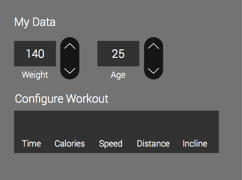
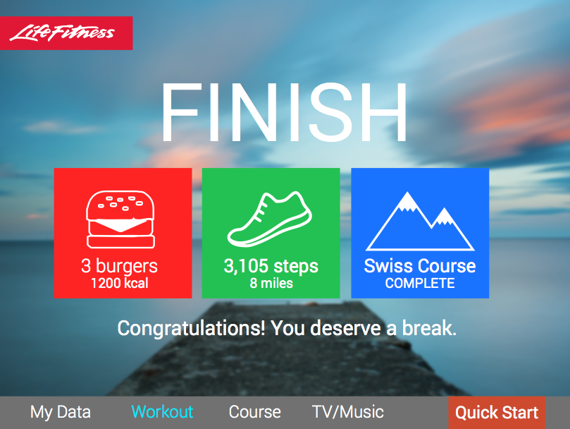

Treadmills are notorious for having bad UI. I wanted to redesign something that was more motivating and easier to use.
Early draft phases included re-arranging the data and picking out what I thought was the most important part of the UI.
Welcome screen - simple start up and inspirational background images.
User information set-up page: Any changes made to the data is always done with the buttons on the right in order to create continuity and consistency. (Can be switched for left-handed users)
Whatever data is chosen, that circle is the biggest on the screen.
Post-Workout: Rewards user with badges of achievement and fun information related to their workout.
After months of research, several user testing phases I redesigned a UI that was flatter, cleaner and simpler. It takes into consideration motivation, treadmill safety and ease of use.